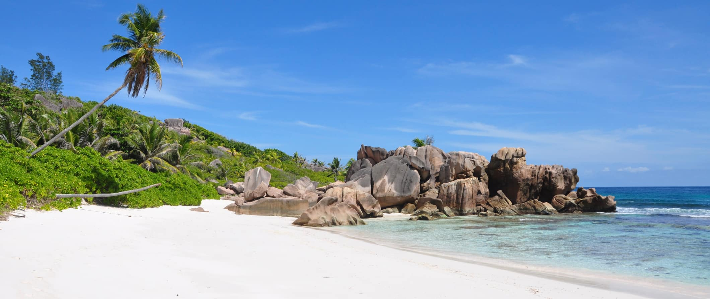

Seychelles
When I think of what heaven would look like, I think of Seychelles. I mean, look at that picture above! It just doesn’t
look real. But it is
and that’s what makes me salivate every time I think of these beautiful islands located off the east coast of Africa.
Unfortunately, isolation and a pristine environment come with a price, and a visit to Seychelles isn’t cheap.
This is not a budget destination. Seychelles is a country that caters to honeymooners, celebrities, and high-end tourists.
Fortunately, in recent years, a few budget options have
appeared (thank you Airbnb!) but, for the most part, you’re going to find this a place hard on your wallet.
This travel guide to the Seychelles will help you plan a trip there and give you ways to save money.
When to Go to Seychelles
The best time to visit Seychelles is between April-May and September-October. The islands will be less
windy during this time and perfect for watersports and lounging on the beach. Temperatures here sit
around 30°C (86°F) all year round, though it’s often breezy so it doesn’t get too humid.
Since different trade winds affect the island at different times of the year, certain islands are better
than others depending on which winds are blowing. May-November will be less windy on the west side of the
islands while the rest of the year will be less windy on the eastern coasts.
From January-March, you can also see the baby turtle hatching and making their way out to sea. They start
nesting and laying eggs in October.

THINGS TO DO AND SEE SEYCHELLES
-
1. Relax on the beach
The beaches here are uncrowded, untouched, and void of any structures. They are beach heaven. The water is clear
and warm so it’s always
a great place to go swimming or snorkeling. Don’t miss Anse Source d’Argent, Anse Lazio, and Beau Vallon beaches.
2. Explore vallee de mai
This is a national park and UNESCO World Heritage Site on Praslin. It is home to
a stunning array of flora and fauna, including the rare Coco de Mer (sea coconut), which
can only be found in two places in the world. You can also see several varieties of latanier palms and screw pine.
3. Climb morne blanc
Located in Morne Seychellois National Park, this is a fun and challenging hike that
takes you through tea plantations all the way to
a panoramic view spot above the island. Visit in the morning to beat the clouds. It takes just under an hour to climb.
4. Visit Aldabra atoll
5. Enjoy the food
Other Things to See and Do in Seychelles
1. Get active
After lounging on the beach, spend some time enjoying the island’s recreational activities.
Golf, squash, snorkeling, kayaking, badminton, SUP, tennis, and hiking are all readily available and affordable.
Kayak and SUP rentals start at 540 SCR ($30 USD) per day while you can rent snorkeling gear for around 180 SCR
($10 USD) per day. Bring your own snorkeling gear if you want to save money.
2. Explore Cousin Island
Just over a mile southwest of Praslin, Cousin Island is a protected nature reserve.
The native bird population here exceeds 300,000! Opened in 1968 specifically to preserve the bird populations, here you
can walk through the thick forest and check out all the different bird species.
Keep your eyes peeled for the endangered Seychelles Magpie Robin. Admission is 500 SCR per person.
3. Hike Nid d’Aigle
The highest point on La Digue, this hike is a fantastic way to spend a day. The sweeping views
of La Digue and of the neighboring islands are magnificent. It’s a 4km hike with 333m of elevation. Most people complete
the hike in 1.5-2 hours.
Remember to pack plenty of snacks, sunscreen, and water. Aim to hike in the morning before it gets too hot
4. Visit L’Union Estate
Back when coconut farming was the main industry on La Digue, this was the center of
production. Just south of La Passe, the estate is now a national heritage site and is run as a sort of informal
museum/theme park. There are some demonstrations involving how the coconuts were harvested and you can explore the
Old Plantation House, the colonial-era graveyard,
and the boatyard. There’s even a pen housing giant tortoises. Admission is 100 SCR ($6 USD) per person.
5. Search for the Veuve Bird
La Digue is home to the Veuve Nature Reserve, which was set up specifically to protect
the Veuve (the black paradise flycatcher). It’s a small purple and black bird that’s endemic to the island and critically
endangered. There are less than 300 left in Seychelles as habitat loss has destroyed their traditional ecosystem. You can arrange
guided tours which are guaranteed to find the bird. Admission is 150 SCR ($8 USD) and 200 SCR ($11 USD) with a guide.
6. Check out the Natural History Museum
If the weather is less than perfect (unlikely), take break from the beaches
and visit the Natural History Museum in Victoria (on Mahe). It’s small but worth a stop if you’d like to learn a thing or
two about the island’s wildlife and geology. The museum highlights all the flora and fauna on the island and there are also
exhibitions on the island’s military and militia. The museum also focuses
on the environmental issues and natural disasters that threaten the nation’s future. Entry is 15 SCR ($1 USD).
Where To Stay in Seychelles
There are no hostels here so you’ll need to stay at
budget-friendly guesthouses. Here are a few suggestions to help you get started:
Liane de Mai (La Digue)
Calou Guest House (La Digue)
Villa Kayola (Mahe)
La Rocaille (Mahe)
Seashell (Praslin)
Book things to do, attractions and tours with 10% discount